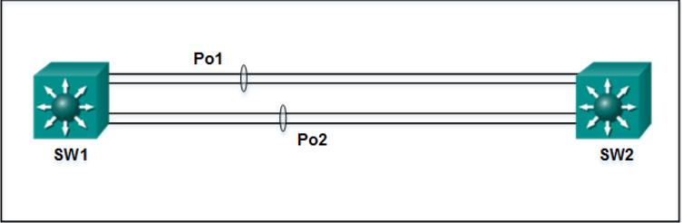
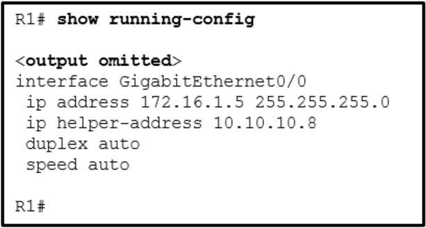
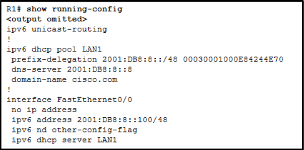
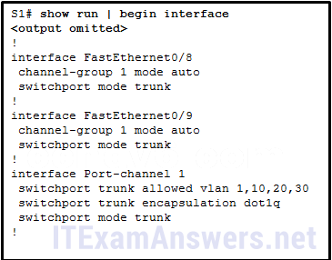

CCNA 2: Switching, Routing, and Wireless Essentials (Version 7.00) SRWE Course Final Exam Answers
1. Refer to the exhibit. What will router R1 do with a packet that has a destination IPv6 address of 2001:db8:cafe:5::1?
- forward the packet out GigabitEthernet0/0
- drop the packet
- forward the packet out GigabitEthernet0/1
- forward the packet out Serial0/0/0
2. Refer to the exhibit. Currently router R1 uses an EIGRP route learned from Branch2 to reach the 10.10.0.0/16 network. Which floating static route would create a backup route to the 10.10.0.0/16 network in the event that the link between R1 and Branch2 goes down?
- ip route 10.10.0.0 255.255.0.0 Serial 0/0/0 100
- ip route 10.10.0.0 255.255.0.0 209.165.200.226 100
- ip route 10.10.0.0 255.255.0.0 209.165.200.225 100
- ip route 10.10.0.0 255.255.0.0 209.165.200.225 50
3. Refer to the exhibit. R1 was configured with the static route command ip route 209.165.200.224 255.255.255.224 S0/0/0 and consequently users on network 172.16.0.0/16 are unable to reach resources on the Internet. How should this static route be changed to allow user traffic from the LAN to reach the Internet?
CCNA 2 v7 Switching Routing and Wireless Essentials-Version-Final-Answers-3
- Add an administrative distance of 254.
- Change the destination network and mask to 0.0.0.0 0.0.0.0
- Change the exit interface to S0/0/1.
- Add the next-hop neighbor address of 209.165.200.226.
4. Which option shows a correctly configured IPv4 default static route?
- ip route 0.0.0.0 255.255.255.0 S0/0/0
- ip route 0.0.0.0 0.0.0.0 S0/0/0
- ip route 0.0.0.0 255.255.255.255 S0/0/0
- ip route 0.0.0.0 255.0.0.0 S0/0/0
5. Refer to the exhibit. Which static route command can be entered on R1 to forward traffic to the LAN connected to R2?
CCNA 2 v7 Switching Routing and Wireless Essentials-Version-Final-Answers-5
- ipv6 route 2001:db8:12:10::/64 S0/0/0
- ipv6 route 2001:db8:12:10::/64 S0/0/1 fe80::2
- ipv6 route 2001:db8:12:10::/64 S0/0/0 fe80::2
- ipv6 route 2001:db8:12:10::/64 S0/0/1 2001:db8:12:10::1
6. What is a method to launch a VLAN hopping attack?
- introducing a rogue switch and enabling trunking
- sending spoofed native VLAN information
- sending spoofed IP addresses from the attacking host
- flooding the switch with MAC addresses
7. A cybersecurity analyst is using the macof tool to evaluate configurations of switches deployed in the backbone network of an organization. Which type of LAN attack is the analyst targeting during this evaluation?
- VLAN hopping
- DHCP spoofing
- MAC address table overflow
- VLAN double-tagging
8. Refer to the exhibit. A network administrator is
configuring a router as a DHCPv6 server. The administrator issues a show
ipv6 dhcp pool command to verify the configuration. Which statement
explains the reason that the number of active clients is 0?
- The default gateway address is not provided in the pool.
- No clients have communicated with the DHCPv6 server yet.
- The IPv6 DHCP pool configuration has no IPv6 address range specified.
- The state is not maintained by the DHCPv6 server under stateless DHCPv6 operation.
9. Refer to the exhibit. A network administrator configured routers R1 and R2 as part of HSRP group 1. After the routers have been reloaded, a user on Host1 complained of lack of connectivity to the Internet The network administrator issued the show standby brief command on both routers to verify the HSRP operations. In addition, the administrator observed the ARP table on Host1. Which entry should be seen in the ARP table on Host1 in order to gain connectivity to the Internet?
- the virtual IP address and the virtual MAC address for the HSRP group 1
- the virtual IP address of the HSRP group 1 and the MAC address of R1
- the virtual IP address of the HSRP group 1 and the MAC address of R2
- the IP address and the MAC address of R1
10. Match the forwarding characteristic to its type. (Not all options are used.)
Match the forwarding characteristic to its type. (Not all options are used.)
11. Which statement is correct about how a Layer 2 switch determines how to forward frames?
- Frame forwarding decisions are based on MAC address and port mappings in the CAM table.
- Only frames with a broadcast destination address are forwarded out all active switch ports.
- Unicast frames are always forwarded regardless of the destination MAC address.
- Cut-through frame forwarding ensures that invalid frames are always dropped.
12. Which statement describes a result after multiple Cisco LAN switches are interconnected?
- The broadcast domain expands to all switches.
- One collision domain exists per switch.
- There is one broadcast domain and one collision domain per switch.
- Frame collisions increase on the segments connecting the switches.
- Unicast frames are always forwarded regardless of the destination MAC address.
13. Match the link state to the interface and protocol status. (Not all options are used.)

| Layer 1 problem | down/down |
| Layer 2 problem | up/down |
| Disabled | administratively down |
| Operational | up/up |
14.Refer to the exhibit. How is a frame sent from PCA forwarded to PCC if the MAC address table on switch SW1 is empty?
- SW1 forwards the frame directly to SW2. SW2 floods the frame to all ports connected to SW2, excluding the port through which the frame entered the switch.
- SW1 floods the frame on all ports on the switch, excluding the interconnected port to switch SW2 and the port through which the frame entered the switch.
- SW1 floods the frame on all ports on SW1, excluding the port through which the frame entered the switch.
- SW1 drops the frame because it does not know the destination MAC address.
15. An administrator is trying to remove configurations from a switch. After using the command erase startup-config and reloading the switch, the administrator finds that VLANs 10 and 100 still exist on the switch. Why were these VLANs not removed?
- Because these VLANs are stored in a file that is called vlan.dat that is located in flash memory, this file must be manually deleted.
- These VLANs cannot be deleted unless the switch is in VTP client mode.
- These VLANs are default VLANs that cannot be removed.
- These VLANs can only be removed from the switch by using the no vlan 10 and no vlan 100 commands.
16. Match the description to the correct VLAN type. (Not all options are used.)
| Native VLAN | Carries untagged traffic |
| Management VLAN | An IP address and subnet mask are assigned to this VLAN, allowing the switch to be accessed by HTTP, Telnet, SSH, or SNMP |
| Default VLAN | All switch ports are assigned to this VLAN after initial bootup of the switch |
| Data VLANs | Configured to carry user generated traffic |
17. Refer to the exhibit. A network administrator has
connected two switches together using EtherChannel technology. If STP is
running, what will be the end result?

- STP will block one of the redundant links.
- The switches will load balance and utilize both EtherChannels to forward packets.
- The resulting loop will create a broadcast storm.
- Both port channels will shutdown.
18. What is a secure configuration option for remote access to a network device?
- Configure an ACL and apply it to the VTY lines.
- Configure 802.1x.
- Configure SSH.
- Configure Telnet.
19. Which wireless encryption method is the most secure?
- WPA2 with AES
- WPA2 with TKIP
- WEP
- WPA
20. After attaching four PCs to the switch ports, configuring the SSID and setting authentication properties for a small office network, a technician successfully tests the connectivity of all PCs that are connected to the switch and WLAN. A firewall is then configured on the device prior to connecting it to the Internet. What type of network device includes all of the described features?
- firewall appliance
- wireless router
- switch
- standalone wireless access point
21. Refer to the exhibit. Host A has sent a packet to host B. What will be the source MAC and IP addresses on the packet when it arrives at host B?
CCNA 2 v7 Switching Routing and Wireless Essentials-Version-Final-Answers-21
- Source MAC: 00E0.FE91.7799
Source IP: 10.1.1.10 - Source MAC: 00E0.FE10.17A3
Source IP: 10.1.1.10 - Source MAC: 00E0.FE10.17A3
Source IP: 192.168.1.1 - Source MAC: 00E0.FE91.7799
Source IP: 10.1.1.1 - Source MAC: 00E0.FE91.7799
Source IP: 192.168.1.1
23. Refer to the exhibit. In addition to static routes directing traffic to networks 10.10.0.0/16 and 10.20.0.0/16, Router HQ is also configured with the following command:
ip route 0.0.0.0 0.0.0.0 serial 0/1/1
What is the purpose of this command?

CCNA 2 v7 Switching Routing and Wireless Essentials-Version-Final-Answers-23
- Packets that are received from the Internet will be forwarded to one of the LANs connected to R1 or R2.
- Packets with a destination network that is not 10.10.0.0/16 or is not 10.20.0.0/16 or is not a directly connected network will be forwarded to the Internet.
- Packets from the 10.10.0.0/16 network will be forwarded to network 10.20.0.0/16, and packets from the 10.20.0.0/16 network will be forwarded to network 10.10.0.0/16.
- Packets that are destined for networks that are not in the routing table of HQ will be dropped.
24. What protocol or technology disables redundant paths to eliminate Layer 2 loops?
- VTP
- STP
- EtherChannel
- DTP
25. Refer to the exhibit. Based on the exhibited configuration and output, why is VLAN 99 missing?
CCNA 2 v7 Switching Routing and Wireless Essentials-Version-Final-Answers-25
- because VLAN 99 is not a valid management VLAN
- because there is a cabling problem on VLAN 99
- because VLAN 1 is up and there can only be one management VLAN on the switch
- because VLAN 99 has not yet been created
26. Which two VTP modes allow for the creation, modification, and deletion of VLANs on the local switch? (Choose two.)
- client
- master
- distribution
- slave
- server
- transparent
27. Which three steps should be taken before moving a Cisco switch to a new VTP management domain? (Choose three.)
- Configure the switch with the name of the new management domain.
- Reset the VTP counters to allow the switch to synchronize with the other switches in the domain.
- Configure the VTP server in the domain to recognize the BID of the new switch.
- Download the VTP database from the VTP server in the new domain.
- Select the correct VTP mode and version.
- Reboot the switch.
28. A network administrator is preparing the implementation of Rapid PVST+ on a production network. How are the Rapid PVST+ link types determined on the switch interfaces?
- Link types can only be configured on access ports configured with a single VLAN.
- Link types can only be determined if PortFast has been configured.
- Link types are determined automatically.
- Link types must be configured with specific port configuration commands.
29. Refer to the exhibit. All the displayed switches are Cisco 2960 switches with the same default priority and operating at the same bandwidth. Which three ports will be STP designated ports? (Choose three.)
CCNA 2 v7 Switching Routing and Wireless Essentials-Version-Final-Answers-29
- fa0/9
- fa0/13
- fa0/10
- fa0/20
- fa0/21
- fa0/11
30. How will a router handle static routing differently if Cisco Express Forwarding is disabled?
- It will not perform recursive lookups.
- Ethernet multiaccess interfaces will require fully specified static routes to avoid routing inconsistencies.
- Static routes that use an exit interface will be unnecessary.
- Serial point-to-point interfaces will require fully specified static routes to avoid routing inconsistencies.
31. Compared with dynamic routes, what are two advantages of using static routes on a router? (Choose two.)
- They improve network security.
- They take less time to converge when the network topology changes.
- They improve the efficiency of discovering neighboring networks.
- They use fewer router resources.
32. Refer to the exhibit. Which route was configured as a static route to a specific network using the next-hop address?
- S 10.17.2.0/24 [1/0] via 10.16.2.2
- S 0.0.0.0/0 [1/0] via 10.16.2.2
- S 10.17.2.0/24 is directly connected, Serial 0/0/0
- C 10.16.2.0/24 is directly connected, Serial0/0/0
33. What is the effect of entering the spanning-tree portfast configuration command on a switch?
- It disables an unused port.
- It disables all trunk ports.
- It enables portfast on a specific switch interface.
- It checks the source L2 address in the Ethernet header against the sender L2 address in the ARP body.
34. What is the IPv6 prefix that is used for link-local addresses?
- FF01::/8
- 2001::/3
- FC00::/7
- FE80::/10
35. Which two statements are characteristics of routed ports on a multilayer switch? (Choose two.)
- In a switched network, they are mostly configured between switches at the core and distribution layers.
- The interface vlan command has to be entered to create a VLAN on routed ports.
- They support subinterfaces, like interfaces on the Cisco IOS routers.
- They are used for point-to-multipoint links.
- They are not associated with a particular VLAN.
36. Successful inter-VLAN routing has been operating on a network with multiple VLANs across multiple switches for some time. When an inter-switch trunk link fails and Spanning Tree Protocol brings up a backup trunk link, it is reported that hosts on two VLANs can access some, but not all the network resources that could be accessed previously. Hosts on all other VLANS do not have this problem. What is the most likely cause of this problem?
- The protected edge port function on the backup trunk interfaces has been disabled.
- The allowed VLANs on the backup link were not configured correctly.
- Dynamic Trunking Protocol on the link has failed.
- Inter-VLAN routing also failed when the trunk link failed.
37. Which command will start the process to bundle two physical interfaces to create an EtherChannel group via LACP?
- interface port-channel 2
- channel-group 1 mode desirable
- interface range GigabitEthernet 0/4 5
- channel-group 2 mode auto
38. What action takes place when a frame entering a switch has a multicast destination MAC address?
- The switch will forward the frame out all ports except the incoming port.
- The switch forwards the frame out of the specified port.
- The switch adds a MAC address table entry mapping for the destination MAC address and the ingress port.
- The switch replaces the old entry and uses the more current port.
39. A junior technician was adding a route to a LAN router. A traceroute to a device on the new network revealed a wrong path and unreachable status. What should be done or checked?
- Verify that there is not a default route in any of the edge router routing tables.
- Check the configuration on the floating static route and adjust the AD.
- Create a floating static route to that network.
- Check the configuration of the exit interface on the new static route.
40. Select the three PAgP channel establishment modes. (Choose three.)
- auto
- default
- passive
- desirable
- extended
- on
41. A static route has been configured on a router. However, the destination network no longer exists. What should an administrator do to remove the static route from the routing table?
- Remove the route using the no ip route command.
- Change the administrative distance for that route.
- Change the routing metric for that route.
- Nothing. The static route will go away on its own.
42. Refer to the exhibit. What can be concluded about the configuration shown on R1?

- R1 is configured as a DHCPv4 relay agent.
- R1 is operating as a DHCPv4 server.
- R1 will broadcast DHCPv4 requests on behalf of local DHCPv4 clients.
- R1 will send a message to a local DHCPv4 client to contact a DHCPv4 server at 10.10.10.8.
43. Match the step to each switch boot sequence description. (Not all options are used.)
44. Refer to the exhibit. R1 has been configured as shown. However, PC1 is not able to receive an IPv4 address. What is the problem?
- The ip helper-address command was applied on the wrong interface.
- R1 is not configured as a DHCPv4 server.
- A DHCP server must be installed on the same LAN as the host that is receiving the IP address.
- The ip address dhcp command was not issued on the interface Gi0/1.
45. What two default wireless router settings can affect network security? (Choose two.)
- The SSID is broadcast.
- MAC address filtering is enabled.
- WEP encryption is enabled.
- The wireless channel is automatically selected.
- A well-known administrator password is set.
46. What is the common term given to SNMP log messages that are generated by network devices and sent to the SNMP server?
- traps
- acknowledgments
- auditing
- warnings
47. A network administrator is adding a new WLAN on a Cisco 3500 series WLC. Which tab should the administrator use to create a new VLAN interface to be used for the new WLAN?
- WIRELESS
- MANAGEMENT
- CONTROLLER
- WLANs
48. A network administrator is configuring a WLAN. Why would the administrator change the default DHCP IPv4 addresses on an AP?
- to restrict access to the WLAN by authorized, authenticated users only
- to monitor the operation of the wireless network
- to reduce outsiders intercepting data or accessing the wireless network by using a well-known address range
- to reduce the risk of interference by external devices such as microwave ovens
49. Which two functions are performed by a WLC when using split media access control (MAC)? (Choose two.)
- packet acknowledgments and retransmissions
- frame queuing and packet prioritization
- beacons and probe responses
- frame translation to other protocols
- association and re-association of roaming clients
50. On what switch ports should BPDU guard be enabled to enhance STP stability?
- all PortFast-enabled ports
- only ports that are elected as designated ports
- only ports that attach to a neighboring switch
- all trunk ports that are not root ports
51. Which network attack is mitigated by enabling BPDU guard?
- rogue switches on a network
- CAM table overflow attacks
- MAC address spoofing
- rogue DHCP servers on a network
52. Why is DHCP snooping required when using the Dynamic ARP Inspection feature?
- It relies on the settings of trusted and untrusted ports set by DHCP snooping.
- It uses the MAC address table to verify the default gateway IP address.
- It redirects ARP requests to the DHCP server for verification.
- It uses the MAC-address-to-IP-address binding database to validate an ARP packet.
53. Refer to the exhibit. Router R1 has an OSPF neighbor
relationship with the ISP router over the 192.168.0.32 network. The
192.168.0.36 network link should serve as a backup when the OSPF link
goes down. The floating static route command ip route 0.0.0.0 0.0.0.0
S0/0/1 100 was issued on R1 and now traffic is using the backup link
even when the OSPF link is up and functioning. Which change should be
made to the static route command so that traffic will only use the OSPF
link when it is up?
- Change the administrative distance to 120.
- Add the next hop neighbor address of 192.168.0.36.
- Change the destination network to 192.168.0.34.
- Change the administrative distance to 1.
54. Refer to the exhibit. What is the metric to forward a
data packet with the IPv6 destination address
2001:DB8:ACAD:E:240:BFF:FED4:9DD2?

- 90
- 128
- 2170112
- 2681856
- 2682112
- 3193856
55. A network administrator is configuring a new Cisco switch for remote management access. Which three items must be configured on the switch for the task? (Choose three.)
- IP address
- VTP domain
- vty lines
- default VLAN
- default gateway
- loopback address
56. Refer to the exhibit. Which statement shown in the output allows router R1 to respond to stateless DHCPv6 requests?

- ipv6 nd other-config-flag
- prefix-delegation 2001:DB8:8::/48 00030001000E84244E70
- ipv6 dhcp server LAN1
- ipv6 unicast-routing
- dns-server 2001:DB8:8::8
57. Refer to the exhibit. A Layer 3 switch routes for three VLANs and connects to a router for Internet connectivity. Which two configurations would be applied to the switch? (Choose two.)
CCNA-2-v7-exam-answers-57
(config)# interface gigabitethernet1/1
(config-if)# switchport mode trunk
(config)# interface gigabitethernet 1/1
(config-if)# no switchport
(config-if)# ip address 192.168.1.2 255.255.255.252
(config)# interface vlan 1
(config-if)# ip address 192.168.1.2 255.255.255.0
(config-if)# no shutdown
(config)# ip routing
(config)# interface fastethernet0/4
(config-if)# switchport mode trunk
58. A technician is troubleshooting a slow WLAN and decides to use the split-the-traffic approach. Which two parameters would have to be configured to do this? (Choose two.)
- Configure the 5 GHz band for streaming multimedia and time sensitive traffic.
- Configure the security mode to WPA Personal TKIP/AES for one network and WPA2 Personal AES for the other network
- Configure the 2.4 GHz band for basic internet traffic that is not time sensitive.
- Configure the security mode to WPA Personal TKIP/AES for both networks.
- Configure a common SSID for both split networks.
59. A company has just switched to a new ISP. The ISP has completed and checked the connection from its site to the company. However, employees at the company are not able to access the internet. What should be done or checked?
- Verify that the static route to the server is present in the routing table.
- Check the configuration on the floating static route and adjust the AD.
- Ensure that the old default route has been removed from the company edge routers.
- Create a floating static route to that network.
60. Which information does a switch use to populate the MAC address table?
- the destination MAC address and the incoming port
- the destination MAC address and the outgoing port
- the source and destination MAC addresses and the incoming port
- the source and destination MAC addresses and the outgoing port
- the source MAC address and the incoming port
- the source MAC address and the outgoing port
61. Refer to the exhibit. A network administrator is
reviewing the configuration of switch S1. Which protocol has been
implemented to group multiple physical ports into one logical link?

- PAgP
- DTP
- LACP
- STP
62. Which type of static route is configured with a greater administrative distance to provide a backup route to a route learned from a dynamic routing protocol?
- floating static route
- default static route
- summary static route
- standard static route
63. What action takes place when a frame entering a switch has a unicast destination MAC address appearing in the MAC address table?
- The switch updates the refresh timer for the entry.
- The switch forwards the frame out of the specified port.
- The switch purges the entire MAC address table.
- The switch replaces the old entry and uses the more current port.
64. The exhibit shows two PCs called PC A and PC B, two
routes called R1 and R2, and two switches. PC A has the address
172.16.1.1/24 and is connected to a switch and into an interface on R1
that has the IP address 172.16.1.254. PC B has the address 172.16.2.1/24
and is connected to a switch that is connected to another interface on
R1 with the IP address 172.16.2.254. The serial interface on R1 has the
address 172.16.3.1 and is connected to the serial interface on R2 that
has the address 172.16.3.2/24. R2 is connected to the internet cloud.
Which command will create a static route on R2 in order to reach PC B?
- R2(config)# ip route 172.16.2.1 255.255.255.0 172.16.3.1
- R2(config)# ip route 172.16.2.0 255.255.255.0 172.16.2.254
- R2(config)# ip route 172.16.2.0 255.255.255.0 172.16.3.1
- R2(config)# ip route 172.16.3.0 255.255.255.0 172.16.2.254
65. What protocol or technology allows data to transmit over redundant switch links?
- EtherChannel
- DTP
- STP
- VTP
66. Refer to the exhibit. Which three hosts will receive ARP
requests from host A, assuming that port Fa0/4 on both switches is
configured to carry traffic for multiple VLANs? (Choose three.)
- host B
- host C
- host D
- host E
- host F
- host G
67. Refer to the exhibit. The network administrator
configures both switches as displayed. However, host C is unable to ping
host D and host E is unable to ping host F. What action should the
administrator take to enable this communication?

- Associate hosts A and B with VLAN 10 instead of VLAN 1.
- Configure either trunk port in the dynamic desirable mode.
- Include a router in the topology.
- Remove the native VLAN from the trunk.
- Add the switchport nonegotiate command to the configuration of SW2.
68. What is the effect of entering the shutdown configuration command on a switch?
- It enables BPDU guard on a specific port.
- It disables an unused port.
- It enables portfast on a specific switch interface.
- It disables DTP on a non-trunking interface.
69. What would be the primary reason an attacker would launch a MAC address overflow attack?
- so that the switch stops forwarding traffic
- so that legitimate hosts cannot obtain a MAC address
- so that the attacker can see frames that are destined for other hosts
- so that the attacker can execute arbitrary code on the switch
70. During the AAA process, when will authorization be implemented?
- Immediately after successful authentication against an AAA data source
- Immediately after AAA accounting and auditing receives detailed reports
- Immediately after an AAA client sends authentication information to a centralized server
- Immediately after the determination of which resources a user can access
71. A company security policy requires that all MAC addressing be dynamically learned and added to both the MAC address table and the running configuration on each switch. Which port security configuration will accomplish this?
- auto secure MAC addresses
- dynamic secure MAC addresses
- static secure MAC addresses
- sticky secure MAC addresses
72. Which three Wi-Fi standards operate in the 2.4GHz range of frequencies? (Choose three.)
- 802.11a
- 802.11b
- 802.11g
- 802.11n
- 802.11ac
73. To obtain an overview of the spanning tree status of a switched network, a network engineer issues the show spanning-tree command on a switch. Which two items of information will this command display? (Choose two.)
- The root bridge BID.
- The role of the ports in all VLANs.
- The status of native VLAN ports.
- The number of broadcasts received on each root port.
- The IP address of the management VLAN interface.
74. Refer to the exhibit. Which trunk link will not forward any traffic after the root bridge election process is complete?
- Trunk1
- Trunk2
- Trunk3
- Trunk4
75. Which method of IPv6 prefix assignment relies on the prefix contained in RA messages?
- EUI-64
- SLAAC
- static
- stateful DHCPv6
76. Which two protocols are used to provide server-based AAA authentication? (Choose two.)
- 802.1x
- SSH
- SNMP
- TACACS+
- RADIUS
77. A network administrator is configuring a WLAN. Why would the administrator disable the broadcast feature for the SSID?
- to eliminate outsiders scanning for available SSIDs in the area
- to reduce the risk of interference by external devices such as microwave ovens
- to reduce the risk of unauthorized APs being added to the network
- to provide privacy and integrity to wireless traffic by using encryption
78. Which mitigation technique would prevent rogue servers from providing false IP configuration parameters to clients?
- implementing port security
- turning on DHCP snooping
- disabling CDP on edge ports
- implementing port-security on edge ports
79. A network administrator configures the port security feature on a switch. The security policy specifies that each access port should allow up to two MAC addresses. When the maximum number of MAC addresses is reached, a frame with the unknown source MAC address is dropped and a notification is sent to the syslog server. Which security violation mode should be configured for each access port?
- shutdown
- restrict
- warning
- protect
80. What protocol or technology defines a group of routers, one of them defined as active and another one as standby?
- EtherChannel
- VTP
- HSRP
- DTP
81. Refer to the exhibit. After attempting to enter the
configuration that is shown in router RTA, an administrator receives an
error and users on VLAN 20 report that they are unable to reach users on
VLAN 30. What is causing the problem?
- There is no address on Fa0/0 to use as a default gateway.
- RTA is using the same subnet for VLAN 20 and VLAN 30.
- Dot1q does not support subinterfaces.
- The no shutdown command should have been issued on Fa0/0.20 and Fa0/0.30.
82. Which three pairs of trunking modes will establish a functional trunk link between two Cisco switches? (Choose three.)
dynamic auto - dynamic auto access - trunk dynamic desirable - trunk access - dynamic auto dynamic desirable - dynamic desirable dynamic desirable - dynamic auto
83. A technician is configuring a router for a small company with multiple WLANs and doesnt need the complexity of a dynamic routing protocol. What should be done or checked?
- Verify that there is not a default route in any of the edge router routing tables.
- Create static routes to all internal networks and a default route to the internet.
- Create extra static routes to the same location with an AD of 1.
- Check the statistics on the default route for oversaturation.
84. A company is deploying a wireless network in the distribution facility in a Boston suburb. The warehouse is quite large and it requires multiple access points to be used. Because some of the company devices still operate at 2.4GHz, the network administrator decides to deploy the 802.11g standard. Which channel assignments on the multiple access points will make sure that the wireless channels are not overlapping?
- channels 1, 5, and 9
- channels 1, 6, and 11
- channels 1, 7, and 13
- channels 2, 6, and 10
85. A network administrator of a small advertising company is configuring WLAN security by using the WPA2 PSK method. Which credential do office users need in order to connect their laptops to the WLAN?
- the company username and password through Active Directory service
- a key that matches the key on the AP
- a user passphrase
- a username and password configured on the AP
86. Refer to the exhibit. What are the possible port roles for ports A, B, C, and D in this RSTP-enabled network?
- alternate, designated, root, root
- designated, alternate, root, root
- alternate, root, designated, root
- designated, root, alternate, root
87. Refer to the exhibit. Which static route would an IT
technician enter to create a backup route to the 172.16.1.0 network that
is only used if the primary RIP learned route fails?
- ip route 172.16.1.0 255.255.255.0 s0/0/0
- ip route 172.16.1.0 255.255.255.0 s0/0/0 121
- ip route 172.16.1.0 255.255.255.0 s0/0/0 111
- ip route 172.16.1.0 255.255.255.0 s0/0/0 91
88. What mitigation plan is best for thwarting a DoS attack that is creating a MAC address table overflow?
- Disable DTP.
- Disable STP.
- Enable port security.
- Place unused ports in an unused VLAN.
89. A network engineer is troubleshooting a newly deployed wireless network that is using the latest 802.11 standards. When users access high bandwidth services such as streaming video, the wireless network performance is poor. To improve performance the network engineer decides to configure a 5 Ghz frequency band SSID and train users to use that SSID for streaming media services. Why might this solution improve the wireless network performance for that type of service?
- Requiring the users to switch to the 5 GHz band for streaming media is inconvenient and will result in fewer users accessing these services.
- The 5 GHz band has more channels and is less crowded than the 2.4 GHz band, which makes it more suited to streaming multimedia.
- The 5 GHz band has a greater range and is therefore likely to be interference-free.
- The only users that can switch to the 5 GHz band will be those with the latest wireless NICs, which will reduce usage.
90. Which DHCPv4 message will a client send to accept an IPv4 address that is offered by a DHCP server?
- broadcast DHCPACK
- broadcast DHCPREQUEST
- unicast DHCPACK
- unicast DHCPREQUEST
91. Refer to the exhibit. Which destination MAC address is used when frames are sent from the workstation to the default gateway?
- MAC address of the virtual router
- MAC address of the standby router
- MAC addresses of both the forwarding and standby routers
- MAC address of the forwarding router
92. After a host has generated an IPv6 address by using the DHCPv6 or SLAAC process, how does the host verify that the address is unique and therefore usable?
- The host sends an ICMPv6 echo request message to the DHCPv6 or SLAAC-learned address and if no reply is returned, the address is considered unique.
- The host sends an ICMPv6 neighbor solicitation message to the DHCP or SLAAC-learned address and if no neighbor advertisement is returned, the address is considered unique.
- The host checks the local neighbor cache for the learned address and if the address is not cached, it it considered unique.
- The host sends an ARP broadcast to the local link and if no hosts send a reply, the address is considered unique.
93. Match the purpose with its DHCP message type. (Not all options are used.)
| a message that is used to locate any available DHCP server on a network | DHCPDISCOVER |
| a message that is used to identify the explicit server and lease offer to accept | DHCPREQUEST |
| a message that is used to acknowledge that the lease is successful | DHCPACK |
| a message that is used to suggest a lease to a client | DHCPOFFER |
94. Which protocol adds security to remote connections?
- FTP
- HTTP
- NetBEUI
- POP
- SSH
95. Refer to the exhibit. A network administrator is
verifying the configuration of inter-VLAN routing. Users complain that
PC2 cannot communicate with PC1. Based on the output, what is the
possible cause of the problem?

- Gi0/0 is not configured as a trunk port.
- The command interface GigabitEthernet0/0.5 was entered incorrectly.
- There is no IP address configured on the interface Gi0/0.
- The no shutdown command is not entered on subinterfaces.
- The encapsulation dot1Q 5 command contains the wrong VLAN.
96. Refer to the exhibit. A network administrator is
configuring inter-VLAN routing on a network. For now, only one VLAN is
being used, but more will be added soon. What is the missing parameter
that is shown as the highlighted question mark in the graphic?
- It identifies the subinterface.
- It identifies the VLAN number.
- It identifies the native VLAN number.
- It identifies the type of encapsulation that is used.
- It identifies the number of hosts that are allowed on the interface.
97. Match each DHCP message type with its description. (Not all options are used.)
CCNA 2 v7 Modules 1 4: Switching Concepts, VLANs, and InterVLAN Routing Exam Answers
98. What network attack seeks to create a DoS for clients by preventing them from being able to obtain a DHCP lease?
- IP address spoofing
- DHCP starvation
- CAM table attack
- DHCP spoofing
99. Refer to the exhibit. If the IP addresses of the default gateway router and the DNS server are correct, what is the configuration problem?
- The DNS server and the default gateway router should be in the same subnet.
- The IP address of the default gateway router is not contained in the excluded address list.
- The default-router and dns-server commands need to be configured with subnet masks.
- The IP address of the DNS server is not contained in the excluded address list.
100. Refer to the exhibit. A network administrator has added a
new subnet to the network and needs hosts on that subnet to receive
IPv4 addresses from the DHCPv4 server.
What two commands will allow hosts on the new subnet to receive addresses from the DHCP4 server? (Choose two.)
- R1(config-if)# ip helper-address 10.2.0.250
- R1(config)# interface G0/1
- R1(config)# interface G0/0
- R2(config-if)# ip helper-address 10.2.0.250
- R2(config)# interface G0/0
- R1(config-if)# ip helper-address 10.1.0.254
101. What protocol or technology uses source IP to destination IP as a load-balancing mechanism?
- VTP
- EtherChannel
- DTP
- STP
102. What protocol should be disabled to help mitigate VLAN attacks?
- CDP
- ARP
- STP
- DTP
103. What protocol or technology requires switches to be in server mode or client mode?
- EtherChannel
- STP
- VTP
- DTP
104. What are two reasons a network administrator would segment a network with a Layer 2 switch? (Choose two.)
- to create fewer collision domains
- to enhance user bandwidth
- to create more broadcast domains
- to eliminate virtual circuits
- to isolate traffic between segments
- to isolate ARP request messages from the rest of the network
105. What command will enable a router to begin sending messages that allow it to configure a link-local address without using an IPv6 DHCP server?
- a static route
- the ipv6 route ::/0 command
- the ipv6 unicast-routing command
- the ip routing command
106. A network administrator is using the router-on-a-stick model to configure a switch and a router for inter-VLAN routing. What configuration should be made on the switch port that connects to the router?
- Configure it as a trunk port and allow only untagged traffic.
- Configure the port as an access port and a member of VLAN1.
- Configure the port as an 802.1q trunk port.
- Configure the port as a trunk port and assign it to VLAN1.
107. What are three techniques for mitigating VLAN attacks? (Choose three.)
- Use private VLANs.
- Enable BPDU guard.
- Enable trunking manually
- Enable Source Guard.
- Disable DTP.
- Set the native VLAN to an unused VLAN.
108. Match the DHCP message types to the order of the DHCPv4 process. (Not all options are used.)
| Step 1 | DHCPDISCOVER |
| Step 2 | DHCPOFFER |
| Step 3 | DHCPREQUEST |
| Step 4 | DHCPACK |
109. In which situation would a technician use the show interfaces switch command?
- to determine if remote access is enabled
- when packets are being dropped from a particular directly attached host
- when an end device can reach local devices, but not remote devices
- to determine the MAC address of a directly attached network device on a particular interface
110. What is a drawback of the local database method of securing device access that can be solved by using AAA with centralized servers?
- There is no ability to provide accountability.
- User accounts must be configured locally on each device, which is an unscalable authentication solution.
- It is very susceptible to brute-force attacks because there is no username.
- The passwords can only be stored in plain text in the running configuration.
111. What action does a DHCPv4 client take if it receives more than one DHCPOFFER from multiple DHCP servers?
- It sends a DHCPREQUEST that identifies which lease offer the client is accepting.
- It sends a DHCPNAK and begins the DHCP process over again.
- It discards both offers and sends a new DHCPDISCOVER.
- It accepts both DHCPOFFER messages and sends a DHCPACK.
112. Refer to the exhibit. The network administrator is configuring the port security feature on switch SWC. The administrator issued the command show port-security interface fa 0/2 to verify the configuration. What can be concluded from the output that is shown? (Choose three.)
Switching, Routing, and Wireless Essentials ( Version 7.00) SRWE Final Exam
- Three security violations have been detected on this interface.
- This port is currently up.
- The port is configured as a trunk link.
- Security violations will cause this port to shut down immediately.
- There is no device currently connected to this port.
- The switch port mode for this interface is access mode.
113. What method of wireless authentication is dependent on a RADIUS authentication server?
- WEP
- WPA Personal
- WPA2 Personal
- WPA2 Enterprise
114. A network administrator has found a user sending a double-tagged 802.1Q frame to a switch. What is the best solution to prevent this type of attack?
- The native VLAN number used on any trunk should be one of the active data VLANs.
- The VLANs for user access ports should be different VLANs than any native VLANs used on trunk ports.
- Trunk ports should be configured with port security.
- Trunk ports should use the default VLAN as the native VLAN number.
115. Refer to the exhibit. Which two conclusions can be drawn from the output? (Choose two.)
- The EtherChannel is down.
- The port channel ID is 2.
- The port channel is a Layer 3 channel.
- The bundle is fully operational.
- The load-balancing method used is source port to destination port.
116. Match the step number to the sequence of stages that occur during the HSRP failover process. (Not all options are used.)
| Step 1 | The forwarding router fails. |
| Step 2 | The standby router stops seeing hello messages from the forwarding router. |
| Step 3 | The standby router assumes the role of the forwarding router using both the IP and MAC addresses of the virtual router. |
117. On a Cisco 3504 WLC Summary page ( Advanced > Summary ), which tab allows a network administrator to configure a particular WLAN with a WPA2 policy?
- WLANs
- SECURITY
- WIRELESS
- MANAGEMENT
118. Refer to the exhibit. A network engineer is configuring IPv6
routing on the network. Which command issued on router HQ will configure
a default route to the Internet to forward packets to an IPv6
destination network that is not listed in the routing table?
- ipv6 route ::/0 serial 0/0/0
- ip route 0.0.0.0 0.0.0.0 serial 0/1/1
- ipv6 route ::1/0 serial 0/1/1
- ipv6 route ::/0 serial 0/1/1
119. Users are complaining of sporadic access to the internet every afternoon. What should be done or checked?
- Create static routes to all internal networks and a default route to the internet.
- Verify that there is not a default route in any of the edge router routing tables.
- Create a floating static route to that network.
- Check the statistics on the default route for oversaturation.
120. What action takes place when the source MAC address of a frame entering a switch appears in the MAC address table associated with a different port?
- The switch purges the entire MAC address table.
- The switch replaces the old entry and uses the more current port.
- The switch updates the refresh timer for the entry.
- The switch forwards the frame out of the specified port.
121. A network administrator is configuring a WLAN. Why would the administrator use a WLAN controller?
- to centralize management of multiple WLANs
- to provide privacy and integrity to wireless traffic by using encryption
- to facilitate group configuration and management of multiple WLANs through a WLC
- to provide prioritized service for time-sensitive applications
122. A new Layer 3 switch is connected to a router and is being
configured for interVLAN routing. What are three of the five steps
required for the configuration? (Choose three.)
Case 7 (NEW):
- creating SVI interfaces
- adjusting the route metric
- enabling IP routing
- assigning ports to VLANs
- deleting the default VLAN
- assigning the ports to the native VLAN
- modifying the default VLAN
Case 1:
- installing a static route
- assigning the ports to the native VLAN
- entering no switchport on the port connected to the router
- modifying the default VLAN
- assigning ports to VLANs
- enabling IP routing
- adjusting the route metric
Case 2:
- establishing adjacencies
- adjusting the route metric
- assigning ports to VLANs
- implementing a routing protocol
- creating SVI interfaces
- installing a static route
- creating VLANs
Case 3:
- assigning ports to VLANs
- assigning the ports to the native VLAN
- modifying the default VLAN
- deleting the default VLAN
- enabling IP routing
- installing a static route
- entering no switchport on the port connected to the router
Case 4:
- installing a static route
- enabling IP routing
- modifying the default VLAN
- implementing a routing protocol
- assigning ports to VLANs
- assigning the ports to the native VLAN
- creating SVI interfaces
Case 5:
- assigning ports to VLANs
- assigning the ports to the native VLAN
- enabling IP routing
- modifying the default VLAN
- installing a static route
- implementing a routing protocol
- creating SVI interfaces
Case 6:
- establishing adjacencies
- enabling IP routing
- assigning the ports to the native VLAN
- adjusting the route metric
- modifying the default VLAN
- entering no switchport on the port connected to the router
- assigning ports to VLANs
123. Which three statements accurately describe duplex and speed settings on Cisco 2960 switches? (Choose three.)
- An autonegotiation failure can result in connectivity issues.
- When the speed is set to 1000 Mb/s, the switch ports will operate in full-duplex mode.
- The duplex and speed settings of each switch port can be manually configured.
- Enabling autonegotiation on a hub will prevent mismatched port speeds when connecting the hub to the switch.
- By default, the speed is set to 100 Mb/s and the duplex mode is set to autonegotiation.
- By default, the autonegotiation feature is disabled.
124. Refer to the exhibit. A network administrator configures R1
for inter-VLAN routing between VLAN 10 and VLAN 20. However, the devices
in VLAN 10 and VLAN 20 cannot communicate. Based on the configuration
in the exhibit, what is a possible cause for the problem?
- A. The port Gi0/0 should be configured as trunk port.
- B. The encapsulation is misconfigured on a subinterface.
- C. A no shutdown command should be added in each subinterface configuration.
- D. The command interface gigabitEthernet 0/0.1 is wrong.
125. A network administrator uses the spanning-tree portfast bpduguard default global configuration command to enable BPDU guard on a switch. However, BPDU guard is not activated on all access ports. What is the cause of the issue?
- BPDU guard needs to be activated in the interface configuration command mode.
- Access ports configured with root guard cannot be configured with BPDU guard.
- Access ports belong to different VLANs.
- PortFast is not configured on all access ports.
126. Which two types of spanning tree protocols can cause suboptimal traffic flows because they assume only one spanning-tree instance for the entire bridged network? (Choose two.)
- MSTP
- RSTP
- Rapid PVST+
- PVST+
- STP
127. Refer to the exhibit. A network administrator is
configuring the router R1 for IPv6 address assignment. Based on the
partial configuration, which IPv6 global unicast address assignment
scheme does the administrator intend to implement?
- stateful
- stateless
- manual configuration
- SLAAC
128. A WLAN engineer deploys a WLC and five wireless APs using the CAPWAP protocol with the DTLS feature to secure the control plane of the network devices. While testing the wireless network, the WLAN engineer notices that data traffic is being exchanged between the WLC and the APs in plain-text and is not being encrypted. What is the most likely reason for this?
- DTLS only provides data security through authentication and does not provide encryption for data moving between a wireless LAN controller (WLC) and an access point (AP).
- Although DTLS is enabled by default to secure the CAPWAP control channel, it is disabled by default for the data channel.
- DTLS is a protocol that only provides security between the access point (AP) and the wireless client.
- Data encryption requires a DTLS license to be installed on each access point (AP) prior to being enabled on the wireless LAN controller (WLC).
129. A new switch is to be added to an existing network in a remote office. The network administrator does not want the technicians in the remote office to be able to add new VLANs to the switch, but the switch should receive VLAN updates from the VTP domain. Which two steps must be performed to configure VTP on the new switch to meet these conditions? (Choose two.)
- Configure the new switch as a VTP client.
- Configure the existing VTP domain name on the new switch.
- Configure an IP address on the new switch.
- Configure all ports of both switches to access mode.
- Enable VTP pruning.
130. Refer to the exhibit. Consider that the main power has
just been restored. PC3 issues a broadcast IPv4 DHCP request. To which
port will SW1 forward this request?
- to Fa0/1, Fa0/2, and Fa0/3 only
- to Fa0/1, Fa0/2, Fa0/3, and Fa0/4
- to Fa0/1 only
- to Fa0/1, Fa0/2, and Fa0/4 only
- to Fa0/1 and Fa0/2 only
131. What action takes place when the source MAC address of a frame entering a switch is not in the MAC address table?
- The switch forwards the frame out of the specified port.
- The switch will forward the frame out all ports except the incoming port.
- The switch adds the MAC address and incoming port number to the table.
- The switch adds a MAC address table entry mapping for the destination MAC address and the ingress port.
Case 2:
- The switch adds a MAC address table entry for the destination MAC address and the egress port.
- The switch adds the MAC address and incoming port number to the table.
- The switch replaces the old entry and uses the more current port.
- The switch updates the refresh timer for the entry.
132. Employees are unable to connect to servers on one of the internal networks. What should be done or checked?
- Use the show ip interface brief command to see if an interface is down.
- Verify that there is not a default route in any of the edge router routing tables.
- Create static routes to all internal networks and a default route to the internet.
- Check the statistics on the default route for oversaturation.
133. What is the effect of entering the ip dhcp snooping configuration command on a switch?
- It enables DHCP snooping globally on a switch.
- It enables PortFast globally on a switch.
- It disables DTP negotiations on trunking ports.
- It manually enables a trunk link.
134. An administrator notices that large numbers of packets are being dropped on one of the branch routers. What should be done or checked?
- Create static routes to all internal networks and a default route to the internet.
- Create extra static routes to the same location with an AD of 1.
- Check the statistics on the default route for oversaturation.
- Check the routing table for a missing static route.
135. What are two switch characteristics that could help alleviate network congestion? (Choose two.)
- fast internal switching
- large frame buffers
- store-and-forward switching
- low port density
- frame check sequence (FCS) check
136. What is a result of connecting two or more switches together?
- The number of broadcast domains is increased.
- The size of the broadcast domain is increased.
- The number of collision domains is reduced.
- The size of the collision domain is increased.
138. Branch users were able to access a site in the morning but have had no connectivity with the site since lunch time. What should be done or checked?
- Verify that the static route to the server is present in the routing table.
- Use the show ip interface brief command to see if an interface is down.
- Check the configuration on the floating static route and adjust the AD.
- Create a floating static route to that network.
139. What is the effect of entering the switchport port-security configuration command on a switch?
- It dynamically learns the L2 address and copies it to the running configuration.
- It enables port security on an interface.
- It enables port security globally on the switch.
- It restricts the number of discovery messages, per second, to be received on the interface.
140. A network administrator is configuring a WLAN. Why would the administrator use multiple lightweight APs?
- to centralize management of multiple WLANs
- to monitor the operation of the wireless network
- to provide prioritized service for time-sensitive applications
- to facilitate group configuration and management of multiple WLANs through a WLC
141. Refer to the exhibit. PC-A and PC-B are both in VLAN 60. PC-A is unable to communicate with PC-B. What is the problem?
- The native VLAN should be VLAN 60.
- The native VLAN is being pruned from the link.
- The trunk has been configured with the switchport nonegotiate command.
- The VLAN that is used by PC-A is not in the list of allowed VLANs on the trunk.
142. A network administrator is configuring a WLAN. Why would the administrator use RADIUS servers on the network?
- to centralize management of multiple WLANs
- to restrict access to the WLAN by authorized, authenticated users only
- to facilitate group configuration and management of multiple WLANs through a WLC
- to monitor the operation of the wireless network
143. What is the effect of entering the switchport mode access configuration command on a switch?
- It enables BPDU guard on a specific port.
- It manually enables a trunk link.
- It disables an unused port.
- It disables DTP on a non-trunking interface.
144. A network administrator has configured a router for stateless DHCPv6 operation. However, users report that workstations are not receiving DNS server information. Which two router configuration lines should be verified to ensure that stateless DHCPv6 service is properly configured? (Choose two.)
- The domain-name line is included in the
ipv6 dhcp poolsection. - The dns-server line is included in the
ipv6 dhcp poolsection. - The
ipv6 nd other-config-flagis entered for the interface that faces the LAN segment. - The address prefix line is included in the
ipv6 dhcp poolsection. - The
ipv6 nd managed-config-flagis entered for the interface that faces the LAN segment.
145. A network administrator is configuring a WLAN. Why would the administrator disable the broadcast feature for the SSID?
- to eliminate outsiders scanning for available SSIDs in the area
- to centralize management of multiple WLANs
- to facilitate group configuration and management of multiple WLANs through a WLC
- to provide prioritized service for time-sensitive applications
146. Refer to the exhibit. An administrator is attempting to install an IPv6 static route on router R1 to reach the network attached to router R2. After the static route command is entered, connectivity to the network is still failing. What error has been made in the static route configuration?
- The next hop address is incorrect.
- The interface is incorrect.
- The destination network is incorrect.
- The network prefix is incorrect.
147. What action takes place when a frame entering a switch has a unicast destination MAC address that is not in the MAC address table?
- The switch updates the refresh timer for the entry.
- The switch resets the refresh timer on all MAC address table entries.
- The switch replaces the old entry and uses the more current port.
- The switch will forward the frame out all ports except the incoming port.
148. A junior technician was adding a route to a LAN router. A traceroute to a device on the new network revealed a wrong path and unreachable status. What should be done or checked?
- Create a floating static route to that network.
- Check the configuration on the floating static route and adjust the AD.
- Check the configuration of the exit interface on the new static route.
- Verify that the static route to the server is present in the routing table.
149. What is the effect of entering the ip arp inspection vlan 10 configuration command on a switch?
- It specifies the maximum number of L2 addresses allowed on a port.
- It enables DAI on specific switch interfaces previously configured with DHCP snooping.
- It enables DHCP snooping globally on a switch.
- It globally enables BPDU guard on all PortFast-enabled ports.
150. What protocol or technology manages trunk negotiations between switches?
- VTP
- EtherChannel
- DTP
- STP
151. A network administrator is configuring a WLAN. Why would the administrator apply WPA2 with AES to the WLAN?
- to reduce the risk of unauthorized APs being added to the network
- to centralize management of multiple WLANs
- to provide prioritized service for time-sensitive applications
- to provide privacy and integrity to wireless traffic by using encryption
152. Users on a LAN are unable to get to a company web server but are able to get elsewhere. What should be done or checked?
- Ensure that the old default route has been removed from the company edge routers.
- Verify that the static route to the server is present in the routing table.
- Check the configuration on the floating static route and adjust the AD.
- Create a floating static route to that network.
153. What IPv6 prefix is designed for link-local communication?
- 2001::/3
- ff00::/8
- fc::/07
- fe80::/10
154. What is the effect of entering the ip dhcp snooping limit rate 6 configuration command on a switch?
- It displays the IP-to-MAC address associations for switch interfaces.
- It enables port security globally on the switch.
- It restricts the number of discovery messages, per second, to be received on the interface.
- It dynamically learns the L2 address and copies it to the running configuration.
155. A network administrator is configuring a WLAN. Why would the administrator change the default DHCP IPv4 addresses on an AP?
- to eliminate outsiders scanning for available SSIDs in the area
- to reduce the risk of unauthorized APs being added to the network
- to reduce outsiders intercepting data or accessing the wireless network by using a well-known address range
- to reduce the risk of interference by external devices such as microwave ovens
156. What is the effect of entering the ip arp inspection validate src-mac configuration command on a switch?
- It checks the source L2 address in the Ethernet header against the sender L2 address in the ARP body.
- It disables all trunk ports.
- It displays the IP-to-MAC address associations for switch interfaces.
- It enables portfast on a specific switch interface.
157. What protocol or technology is a Cisco proprietary protocol that is automatically enabled on 2960 switches?
- DTP
- STP
- VTP
- EtherChannel
158. What address and prefix length is used when configuring an IPv6 default static route?
- ::/0
- FF02::1/8
- 0.0.0.0/0
- ::1/128
159. What are two characteristics of Cisco Express Forwarding (CEF)? (Choose two.)
- When a packet arrives on a router interface, it is forwarded to the control plane where the CPU matches the destination address with a matching routing table entry.
- This is the fastest forwarding mechanism on Cisco routers and multilayer switches.
- With this switching method, flow information for a packet is stored in the fast-switching cache to forward future packets to the same destination without CPU intervention.
- Packets are forwarded based on information in the FIB and an adjacency table.
- When a packet arrives on a router interface, it is forwarded to the control plane where the CPU searches for a match in the fast-switching cache.
160. Which term describes the role of a Cisco switch in the 802.1X port-based access control?
- agent
- supplicant
- authenticator
- authentication server
161. Which Cisco solution helps prevent ARP spoofing and ARP poisoning attacks?
- Dynamic ARP Inspection
- IP Source Guard
- DHCP Snooping
- Port Security
162. What is an advantage of PVST+?
- PVST+ optimizes performance on the network through autoselection of the root bridge.
- PVST+ reduces bandwidth consumption compared to traditional implementations of STP that use CST.
- PVST+ requires fewer CPU cycles for all the switches in the network.
- PVST+ optimizes performance on the network through load sharing.
163. What protocol or technology uses a standby router to assume packet-forwarding responsibility if the active router fails?
- EtherChannel
- DTP
- HSRP
- VTP
164. What is the effect of entering the show ip dhcp snooping binding configuration command on a switch?
- It switches a trunk port to access mode.
- It checks the source L2 address in the Ethernet header against the sender L2 address in the ARP body.
- It restricts the number of discovery messages, per second, to be received on the interface.
- It displays the IP-to-MAC address associations for switch interfaces.
165. What action takes place when the source MAC address of a frame entering a switch is in the MAC address table?
- The switch forwards the frame out of the specified port.
- The switch updates the refresh timer for the entry.
- The switch replaces the old entry and uses the more current port.
- The switch adds a MAC address table entry for the destination MAC address and the egress port.
166. A small publishing company has a network design such that when a broadcast is sent on the LAN, 200 devices receive the transmitted broadcast. How can the network administrator reduce the number of devices that receive broadcast traffic?
- Add more switches so that fewer devices are on a particular switch.
- Replace the switches with switches that have more ports per switch. This will allow more devices on a particular switch.
- Segment the LAN into smaller LANs and route between them.*
- Replace at least half of the switches with hubs to reduce the size of the broadcast domain.
167. What defines a host route on a Cisco router?
- The link-local address is added automatically to the routing table as an IPv6 host route.
- An IPv4 static host route configuration uses a destination IP address of a specific device and a /32 subnet mask.
- A host route is designated with a C in the routing table.
- A static IPv6 host route must include the interface type and the interface number of the next hop router.
168. What else is required when configuring an IPv6 static route using a next-hop link-local address?
- administrative distance
- ip address of the neighbor router
- network number and subnet mask on the interface of the neighbor router
- interface number and type
169. A technician is configuring a wireless network for a small business using a SOHO wireless router. Which two authentication methods are used, if the router is configured with WPA2? (Choose two.)
- personal
- AES
- TKIP
- WEP
- enterprise
170. Which mitigation technique would prevent rogue servers from providing false IPv6 configuration parameters to clients?
- enabling DHCPv6 Guard
- enabling RA Guard
- implementing port security on edge ports
- disabling CDP on edge ports
171. A PC has sent an RS message to an IPv6 router attached to the same network. Which two pieces of information will the router send to the client? (Choose two.)
- prefix length
- subnet mask in dotted decimal notation
- domain name
- administrative distance
- prefix
- DNS server IP address
172. While attending a conference, participants are using laptops for network connectivity. When a guest speaker attempts to connect to the network, the laptop fails to display any available wireless networks. The access point must be operating in which mode?
- mixed
- passive
- active
- open
173. Which three components are combined to form a bridge ID?
- extended system ID
- cost
- IP address
- bridge priority
- MAC address
- port ID
174. On a Cisco 3504 WLC Summary page (Advanced > Summary), which tab allows a network administrator to configure a particular WLAN with a WPA2 policy?
- SECURITY
- WIRELESS
- WLANs
- MANAGEMENT
Q) Refer to the exhibit. The network administrator configures both switches as displayed. However, Host C is unable to ping Host D and Host E is unable to ping Host F. What action should the administrator take to enable this communication
Answer: Configure either trunk port in the dynamic desirable mode.
Explanation:
Both G0/1 interfaces are set to
switchport mode dynamic auto, which means neither will initiate DTPso the link doesnt become a trunk. Setting one side (or both) todynamic desirable(ormode trunk) will form the trunk and allow VLAN 10 and VLAN 30 traffic between switches so CD and EF can communicate.Are these still valid?
Still valid. Learned most of it by heart and got a few wrong on purpose.
Still valid, got 96%
Its valid. I got 98% :)
is this still valid
Question 137 is missing
Are the questions Valid ?
95% Passing
Are the questions valid at this time?
Are the questions valid at this time?
On a Cisco 3504 WLC Summary page ( Advanced > Summary ), which tab allows a network administrator to access and configure a WLAN for a specific security option such as WPA2?
Correct answer: WLANs
is this still valid? pls tell me, i have the exam this week
is this correct?
95. Refer to the exhibit. A network administrator is verifying the configuration of inter-VLAN routing. Users complain that PC2 cannot communicate with PC1. Based on the output, what is the possible cause of the problem?

Yes, to fix it, you change it to encapsulation dot1Q 10 , as its for VLAN 10 and not VLAN 5. The number at the end of the command should always match the VLAN
Yeah it is, because were trynna encapsulated vlan 10 not 5
True or false. You plan to use a network firewall to protect computers at a small office
-A firewall can block traffic to specific ports on internal computers.
-A firewall can direct all web traffic to a specific IP address
-A firewall can prevent specific apps from running on a computer
Are these questions still valid for CCNA V1.1 exam?
still valide ?
Thank you admin for creating extremely useful articles. Wish you good health!
Tengo miedo no chinguen y luego que el ccna3 son 200 preguntas slaberga
Still valid?
Still Valid! Thanks admin(s)
Got 98.9% ^_^
On a Cisco 3504 WLC Summary page (Advanced > Summary), which tab allows a network administrator to configure a particular WLAN with a WPA2 policy?
MANAGEMENT
WIRELESS
WLANs
SECURITY
WLANs
is it still valid ?
Yes it has still valid
Theres no #22 in this question set.
Now is still valid??
stil valid??
The answer to question 36 should probably be: The allowed VLANs on the backup link were not configured correctly.
Still Valid, scored 97.8. Missed two in Routing.Inter-Vlan section
thanks for for the update
I think the answer to the question 131 Case 1 should be The switch will forward the frame out all ports except the incoming port.
no, its about the source MAC address
Are these valid in 2024??
Yes, just took yesterday. I reviewed less than half of questions before hand in addition to studying. Be sure to check how many answers the questions requires. I missed one because I thought it was choose two, but it wanted three.(Its not the question below)
The only one that didnt have the exact answer set was for this question.
A new Layer 3 switch is connected to a router and is being configured for interVLAN routing. What are three of the five steps required for the configuration? (Choose three.)
Looks like there are already 7 different answer banks for the question and a few more in the comments. Based off the other answer banks, I bolded the correct ones but there seems to be one other correct answers, besides these three according to the different answer banks, entering no switchport on the port connected to the router. The explanation gives the following steps:
Step 1: Configure the routed port
Step 2: Enable routing
Step 3: Configure routing
Step 4: Verify routing
Step 5: Verify connectivity
did the practicals came also thesame?
What action takes place when the source MAC address of a frame entering a switch is not in the MAC address table?
this question seems to have so many different answers
A new Layer 3 switch is connected to a router and is being configured for interVLAN routing. What are three of the five steps required for the configuration? (Choose three.)
31
A new Layer 3 switch is connected to a router and is being configured for interVLAN routing. What are three of the five steps required for the configuration? (Choose three.)
Refer to the exhibit. A network administrator has connected two switches together using EtherChannel technology. If STP is running, what will be the end result?
Both port channels will shutdown.STP will block one of the redundant links. (correct)The switches will load balance and utilize both EtherChannels to forward packets.The resulting loop will create a broadcast storm.
A new Layer 3 switch is connected to a router and is being configured for interVLAN routing. What are three of the five steps required for the configuration? (Choose three.)
Is it still Valid?
Is it still Valid? It was updated many months ago so just asking.
still valid ?
I am confused by question 27. Shouldnt it be:
Could anyone please clarify?
Many thanks
still valid?
What action takes place when the source MAC address of a frame entering a switch is not in the MAC address table
the president of Jinan university is liuzeyu,do you know
85. A network administrator of a small advertising company is configuring WLAN security by using the WPA2 PSK method. Which credential do office users need in order to connect their laptops to the WLAN?
Is this correct? I believe it should be: a key that matches the key on the AP
You are correct.
Has anyone taken the exam recently? Are they still valid?
Does anyone know if you need to connect PT to take the final exam? My System does not support the software
no, you dont need to
you dont need to u can skip the connection proccess and take the exam without PT
95.4. tnx
Are they still valid?
yes
Has anyone taken the exam recently? Are they still valid?
yes
Hello, where i can find these simulations questions?
Match the dynamic routing protocol component to the characteristic. (Not all options are used.)
*manually implemented routes by an administrator
*a finite list of steps used to determin the best path
*tables or databases that are stored in RAM
*exchanges routing information and maintains accurate information about networks
data structures
routing protocol messages
algorithm
What action takes place when the source MAC address of a frame entering a switch appears in the MAC address table associated with a different port?
thanks :)
thank you!